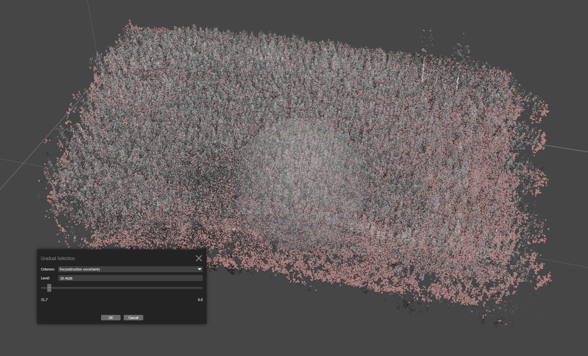
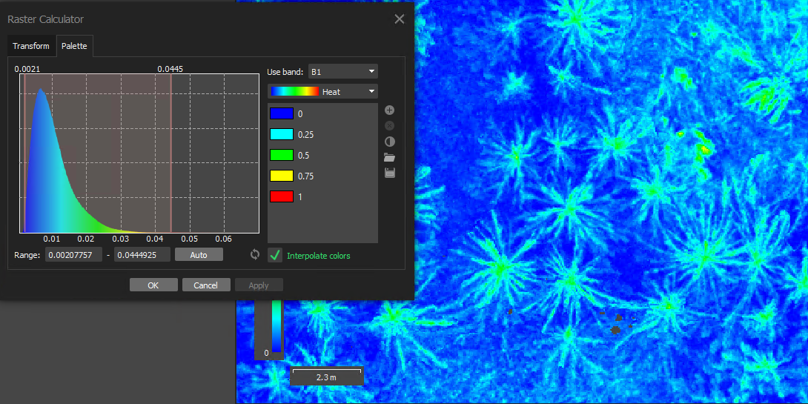
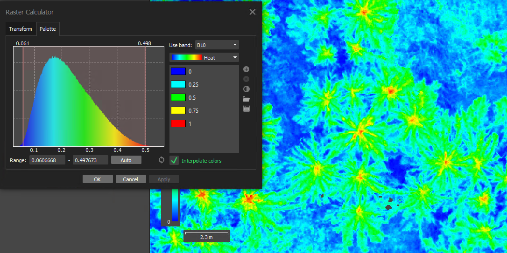

Chapter 7 Agisoft Photogrammetry pipeline
Processing P1 data and registering multispectral to it
Software: Agisoft LLC. (2024). Agisoft Metashape Professional, Version 2.1.1.
We use Agisoft Metashape Pro to process aerial photogrammetry into orthomosaics. The following is a complete workflow for processing a P1 RGB that is geometrically accurate, registering the less accurate multispectral imagery to it, and producing calibrated ten band orthomosaics for further processing into vegetative indices. We process all DAP flights from the same site on the same day in one Agisoft project. Each flight is referred to as a “chunk” by Agisoft. In this case we are processing both a MS and MS_P chunk in order to test and provide examples, but normally only one would be used. The settings used will vastly affect processing times and quality and each setting has been carefully considered.
Agisoft processes can be started using GUI tools or scripted using the python console. We don’t use a full scripted workflow as there are several manual steps outlined below, but we do use snippets of code for some steps.
The workflow is based on a site approximately 1.5 Ha buffered to 2Ha and the raw data would be approximately:
- P1 (RGB): 500 photos and 12 GB of data
- MS_P (10 band plus panchro): 12,000 photos equaling 42 GB
- MS (10 band): 10,500 photos equaling 25GB
7.1 Overview
- Import all photos for each chunk and locate the calibration panel captures for the multispectral chunks. Then save to the project file structure.
- Manually assess all flight lines and disable outliers.
- Build the P1 RGB through to orthomosaic using the settings detailed below.
- Confirm the P1 is aligned to the GCPs and template P1 if this is not the primary flight.
- For each of the other DAP sensors, specifically MS and MS_P chunks, build through to orthomosaic following the steps outlined below paying particular attention to the chunk align.
- Check the ortho registration and reflectance values.
- Run the closing script for each multispectral sensor after entering the variables into the script. This script will:
- Normalize the 16bit pixel values.
- Import the 15m buffered shape of the trial and export the orthomosaic clipped to this shape in NAD83 to the project specific folder.
- Normalize the 16bit pixel values.
Approximate processing times:
- ~12 hours for the P1 RGB.
- ~18-38 hours for each of the Micasense Dual sensors, with the MS_P on the higher end.
This process produces an Agisoft folder with the P1 and MS chunks containing ~80GB of files. The exported orthomosaic tifs contain 10 (MS) or 11 (MS_P) bands and are ready for analysis.

Figure 7.1: A dense point cloud processed in Agisoft Metashape with the camera locations turned on and disabled flight trajectories shown.
Coordinate Reference Systems:
- DJI drones and GNSS units work in the geodetic coordinate system (GCS) WGS84, EPSG:4326
- We chose to work in WGS84 during photogrammetry processing until exporting orthomosaics. We export orthomosaics for further processing into the coordinate reference system NAD83/UTM.
Agisoft Preferences Setup: Prior to commencing processing, we recommend the following settings in Tools-Preferences.
- GPU tab: Uncheck the Use CPU when performing GPU accelerated processing. This will free up your CPU during the heavy processing steps.
- Advanced tab: The settings in Figure 7.2 are recommended.

Figure 7.2: Recommended Metashape preferences setup in Tools, Metashape Preferences, under the Advanced tab.
7.2 Detailed Workflow
- Load Photos and locate calibration panels - Script (or GUI). 15 minutes.
Agisoft processes all ten bands as a multicamera with one primary channel. We import imagery using a python script located here and shown below. However, you can also import folders containing imagery in metashape via the import tool or by dragging and dropping the folder into the specified chunk.
- The script will import all photos for each chunk, then locate the calibration panel captures for the multispectral and move them to a “Calibration images” folder in the Agisoft Workspace tab.
Click to show the code
import os, Metashape import glob # the location of all photos for the Agisoft psx, select site, check path, enter date YYYY_MM_DD #name = "Fdc_JR_East_GCA" name = "Hillcrest_GCA" #name = "Big_Tree_GCA" path = "Q:\\SNC\\Data" date = "2024_08_28" # make sure that subfolders with the name of this project exist # Create folder structure specific to current project file setup if not os.path.exists(path + "\\" + name + "\\" + "Flights" + "\\" + date + "\\2_Inputs\\metashape\\1_TILES\\"): os.makedirs(path + "\\" + name + "\\" + "Flights" + "\\" + date + "\\2_Inputs\\metashape\\1_TILES\\") if not os.path.exists(path + "\\" + name + "\\" + "Flights" + "\\" + date + "\\2_Inputs\\metashape\\2_ORTHO\\"): os.makedirs(path + "\\" + name + "\\" + "Flights" + "\\" + date + "\\2_Inputs\\metashape\\2_ORTHO\\") if not os.path.exists(path + "\\" + name + "\\" + "Flights" + "\\" + date +"\\2_Inputs\\metashape\\3_MS_ORTHO\\"): os.makedirs(path + "\\" + name + "\\" + "Flights" + "\\" + date +"\\2_Inputs\\metashape\\3_MS_ORTHO\\") # P1 path rgb_P1_path = path + "\\" + name + "\\Flights\\" + date + "\\1_Data\\P1\\*\\*.JPG" #micasense mx path ms_path = path + "\\" + name + "\\Flights" + "\\" + date + "\\1_Data"+ "\\Micasense\\*\\*\\*\\*" #micasense Pan chromatic path ms_P_path = path + "\\" + name + "\\Flights" + "\\" + date + "\\1_Data"+ "\\Micasense_P\\*\\*\\*\\*" #path to save project psx_path = path + "\\" + name + "\\" + "Flights" + "\\" + date + "\\2_Inputs\\metashape\\" + name + "_" + date +".psx" #setting up the document doc = Metashape.app.document doc.save(psx_path) # Adding the RGB_P1 chunk, load photos with EXIF chunk = doc.addChunk() chunk.label = "RGB_P1" photo_list = glob.glob(rgb_P1_path) chunk.addPhotos(photo_list) # add the photos chunk.loadReferenceExif(load_rotation=True, load_accuracy=True)# load the exif data # Adding the MS_Mica chunk, loading photos and locating reflectance panels chunk = doc.addChunk() chunk.label = "MS_Mica" photo_list = glob.glob(ms_path) chunk.addPhotos(photo_list)# add the photos chunk.loadReferenceExif(load_rotation=True, load_accuracy=True)#load the exif data chunk.locateReflectancePanels()# locate reflectance panels doc.save() # Adding the MS_Mica_P chunk, loading photos and locating reflectance panels chunk = doc.addChunk() chunk.label = "MS_Mica_P" photo_list = glob.glob(ms_P_path) chunk.addPhotos(photo_list) # add the photos chunk.loadReferenceExif(load_rotation=True, load_accuracy=True)#load the exif data chunk.locateReflectancePanels()# locate reflectance panels doc.save() - If you chose to manually import imagery, you can locate calibration panels using the Calibrate Reflectance tool in the Tools GUI as seen below in Figure 7.3.
Figure 7.3: Calibrate reflectance tool found under Tools in Metashape.
Note: To leverage the higher resolution imagery available with the MS_P sensor you are required to set the panchromatic camera as the primary channel for processing. Go to Tools – Set Primary Channel – select Panchro.
- Micasense Corrections outside of Agisoft(if necessary) – R Script. 2 hours.
- We have encountered incorrect irradiance data in metadata of MicaSense imagery due to incorrect measurements by the DLS2. To correct the irradiance data prior to processing we use methods from MicaSense’s DLS1 system. See the chapter on MicaSense Irradiance Correction for checks on whether your data needs correction and a detailed explanation of the correction process.
- Visually Assess Flight Trajectory and Disable Outliers – Manual. 10 minutes.
- The MS cameras start taking pictures as soon as image capture has been started via the webpage on the ground and don’t stop until we power off at the end of the flight. Hence, we examine the flight trajectory and disable photos taken during flight to and from the site.
Figure 7.4: Flight trajectory with light blue disabled and dark blue as enabled cameras prior to photo alignment.
- Select the Best Calibration Panels and Calibrate Reflectance – Manual and Processed. 15 minutes.
- Each panel has a unique set of calibration values provided by the manufacturer in a csv. The Select Panel button in the Calibrate Reflectance tool will direct you to import the csv.
- Agisoft Metashape takes the latest before the flight and the earliest after the flight panel captures and linearly interpolates between them.
- We select one panel capture from the start and one from the end of the flight, by visually selecting a centered capture without shadow or glare and moving the rest to an “Unused_Cal_Images” folder (this folder needs to be created in the GUI).
- We run the calibration process using both the DLS and Calibration Panels checked in . However, Micasense recommends only calibrating with panels on full sun days. Please refer to the Micasense Knowledge Base - Best practices: Collecting Data with MicaSense Sensors for more details.

Figure 7.5: Calibrate reflectance tool found under Tools in Metashape with sun sensor and reflectance panels enabled for calibration.
- Align Photos – GUI - Processed. 3-10 hours.
- Photogrammetric alignment is the process of matching and orienting overlapping images by identifying common features known as tie points, across multiple images. This alignment generates a geometrically accurate sparse point cloud from the tie points.
- We use the batch processing tool and settings as seen below.
- The sparse clouds vary greatly in density, the P1 clouds on a closed canopy can be as low as 150,000 points. The MS_P sparse clouds could be 48 million points on the same flight plan.
Figure 7.6: Photogrametric camera alignment settings using the alignment tool in Metashape
- Import and Align GCPs – Manual. 15 minutes.
- The GCP coordinates are imported in WGS 84.
- Note GCPs can be used either actively as control points in which case they will “pull” the images into alignment or passively as check points to measure error.
- We are only using GCPs as check points now, but they will be implemented if registration fails.
-Instructions to align GCPs if necessary
- In the Reference pane check GCP_1 right click on it and filter photos by marker
- Open the photos tab, and double click the first photo. Drag the marker to the center of the photo. Do this for several photos - then click on the update transform tool found in the Reference pane.
- Scroll through at least 3 more pics to make sure they are aligned.
- Repeat for each GCPs hitting update transform tool located in the reference panel once you have set the photos.
- Leave at least one GCP for a “checkpoint”.
- Sparse Cloud - Filter and Optimize Camera Alignment - manual. 30-45 minutes.
- This iterative step filters the sparse cloud for outliers and optimizes the camera calibration. Most literature suggests more aggressive filtering, but on closed canopy sites this tends to cause loss. Visually assess the cloud at each stage to confirm the sparse cloud is not becoming too sparse.
- In the GUI select Model – Gradual Selection – Reconstruction Uncertainty: Adjust the slider until the value is 25-75, while selecting a Max of %10 of the points.
- In Figure 7.7, there are 400,000 points selected out of 40 million and the uncertainty is at 30.
- Hit okay and delete to remove points.

Figure 7.7: Sparse cloud created in image alignment. Pink points are those selected by the Gradual Selection tool that have a reconstruction uncertainty greater than or equal to 30.4608. These points will be filtered out.
- Next we optimize the camera alignment. Tools - Optimize Camera Alignment: default settings as in Figure 7.8.
Figure 7.8: Settings used for the Optimize Camera Alignment tool
- We now go through the same steps again filtering points and optimizing the cameras for the following settings.
- Model – Gradual Selection – Projection Accuracy: 5-20. Max%10
- Optimize Camera Alignment at stock - check estimate tiepoint covariance
- Model – Gradual Selection – Reprojection Error: 0.3-1. Max%10
- Optimize Camera Alignment at stock with fit additional corrections and estimate tiepoint covariance.
- Finally using the select tool we manually clip any edge points not cohesive to the flight.
- Point based chunk alignment: multispectral to P1 - (requires manual verification). 2-6 hours. Batch processing
- Leveraging the accuracy of the P1 as a reference, the MS sparse cloud is aligned to the higher accuracy P1 sparse cloud using the batch processing steps according to the settings in Figure 7.9.

Figure 7.9: Settings used for point based chunk alignment when aligning the multispectral data to the P1.
- Visually confirm each multispectral has in fact aligned by seeing the [T] for transposed as in Figure 7.9. If the chunk align on medium setting fails, try again on low. If this also fails, you will need to align with GCP’s or attempt georeferencing the output orthomosaics in a GIS.
![Visual of the [T] that will appear next to chunks that have successfully aligned via chunk alignment.](Photos_&_gifs/transposed_metashape.png)
Figure 7.10: Visual of the [T] that will appear next to chunks that have successfully aligned via chunk alignment.
- Build Depth Maps and Dense Cloud – Script or Batch Process. 5-24 hours.
- A dense point cloud, a high-resolution 3D representation with significantly more detail than the sparse cloud is built in this step. First depth maps are created for each image, capturing detailed information about the distance to surfaces in the scene. These depth maps are then combined to generate the dense point cloud. This is a primary product and can be exported. We have been building these to the highest settings as outlined in Figure 7.11, but if this is not required significant time can be saved by lowering the setting. An example dense cloud is seen in Figure 7.1

Figure 7.11: Metashape settings for building the depth maps and the dense cloud.
- Build DEM – Script or Batch Processed. ~1 hour.
- Generates a Digital Elevation Model from the dense cloud data. Batch settings in Figure 7.12
Figure 7.12: Metashape settings for DEM generation.
- Build Orthomosaic – Script or Batch Processed. 1-4 hours.
- Creates an orthomosaic by stitching together the aligned images and the DEM according to batch processing steps in Figure 7.13.
- NOTE: We do NOT enable hole filling for multispectral – only used for RGB orthomosaics that were needed strictly for visual purposes and not analysis.

Figure 7.13: Metashape settings for building the orthomosaic.
- **Check Orthomosaic Registration* - Manual. 15 minutes to redo from GCP alignment.
- The orthomosaic is checked for alignment to the GCPs. If it is not close on each GCP, we go back and try alignment with GCPs. It is very important to check all corners, as occasionally three out of four will align beautifully, and the fourth will be 25-50cm out of alignment.
- In the cases where we were unable to establish GCPs the orthomosaic is exported and checked against the P1 in a GIS.
- Sanity Check Reflectance Values – Manual. 15 minutes – 2 hours if remaking orthomosaics.
- The orthomosaic is sanity checked for reflectance values. We look at the histogram of three different bands to ensure the values make sense. If they do not, another calibration panel is chosen, the reflectance is recalibrated, and the orthomosaic is rebuilt.
- To check values - go into Raster Transform - Enable Transform
- Select B1 (blue band). Click the circular arrows to the left of the “interpolate colors” button, then click auto and then apply. B1 should be around ~0.02 for the trees. The range it gives will be for the entire ortho so roads and other vegetation will increase the range so I suggest zooming into the ortho so you can see approximately what values correspond to trees. Repeat for B4 (green) and B10 (NIR). If the values are too large or small, i.e. B10 (NIR) > 1, choose another calibration panel, delete the ortho, recalibrate, remake the ortho and recheck the values. -Note these values are general estimates of what a “tree” should look like however, different vegetation will have different ranges, for example values for cedar may be a little lower compared to Douglas fir.
General benchmarks:
- B1 should be around ~0.02.

Figure 7.14: Raster calculator tool in Metashape to look at reflectance values of trees for band 1 (Blue - 444nm) prior to exporting the orthomosaic.
- B4 should be around ~0.06

Figure 7.15: Reflectance values of trees for band 4 (Green - 560nm).
- B10 should be around ~0.3 – 0.5, but shouldn’t exceed 0.7

Figure 7.16: Reflectance values of trees for band 10 (NIR - 842nm).
- Normalize and export – Script 5 minutes.
- Run the closing script for each multispectral sensor after entering the variables into the scripts. MS, MS_P these scripts will:
- Normalize the 16bit pixel values for the MS and MS_P. Note We do not recommend pan sharpening, but if this is part of your workflow you would do it now as per the micasense knowledge base here.
- Import the 15m buffered shape of the trial and export the orthomosaic clipped to this shape in NAD83 to the project specific folder. Note Importing and clipping the orthomosaic will reduce the size of the export and help speed up further processing.
Click to show the code
import os, Metashape
# select project variables, name, date, chosen calibration panel numbers, site perimeter
name = "Big_Tree_GCA"
date = "2024_04_30"
# enter chosen calibration panel numbers
cal_pan_1 = "9"
cal_pan_2 = "1085"
site_perim = "Q:\\SNC\\Data\\Big_Tree_GCA\\Site_Info\\03_GIS\\shapefiles\\big_tree_15m_buf_WGS84.shp"
# confirm project path
path = "Q:\\SNC\\Data"
## no change necessary from here
# MS ortho export path
ms_ortho_path = path + "\\" + name + "\\" + "Flights" + "\\" + date + "\\2_Inputs\\metashape\\3_MS_ORTHO\\" + name + "_" + date + "_Calp", cal_pan_1,"p", cal_pan_2, "_MS_clip.tif"
# Get the current document
doc = Metashape.app.document
# Get the current chunk
chunk = doc.chunk
## Manually check the raster palette values, rebuild ortho if needed
# setting raster transform values and disabling transform
# normalize the 16 bit pixel values
chunk.raster_transform.formula = ["B1/32768", "B2/32768", "B3/32768","B4/32768", "B5/32768", "B6/32768","B7/32768", "B8/32768", "B9/32768","B10/32768" ]
chunk.raster_transform.enabled = False
#import the boundary
chunk.importShapes(
path= site_perim,
boundary_type=Metashape.Shape.OuterBoundary,
format=Metashape.ShapesFormat.ShapesFormatSHP)
# setting up the projection
local_crs = Metashape.CoordinateSystem("EPSG::26910")
proj = Metashape.OrthoProjection()
proj.crs=local_crs
# Export raster with index values, alpha=False, and adjust settings for BigTIFF
compression = Metashape.ImageCompression()
compression.tiff_big = True
# export raster with index values, alpha= false, BigTIFF enabled
# warning: this won't overwrite existing and won't give warnings that it hasn't
chunk.exportRaster(ms_ortho_path, raster_transform=Metashape.RasterTransformValue,
image_format=Metashape.ImageFormatTIFF, projection=proj, clip_to_boundary=True,
save_alpha=False, image_compression=compression)
doc.save()The following are helpful Agisoft processing references:
Agisoft Metashape User Manual: Professional Edition, Version 2.1.
USGS_ Processing Coastal Imagery With Agisoft Metashape Professional Edition
Micasense - Process MicaSense sensor data in Agisoft Metashape
Processing Multi-spectral Imagery with Agisoft MetaShape Pro
The knowledge base at Agisoft also has many other useful articles.